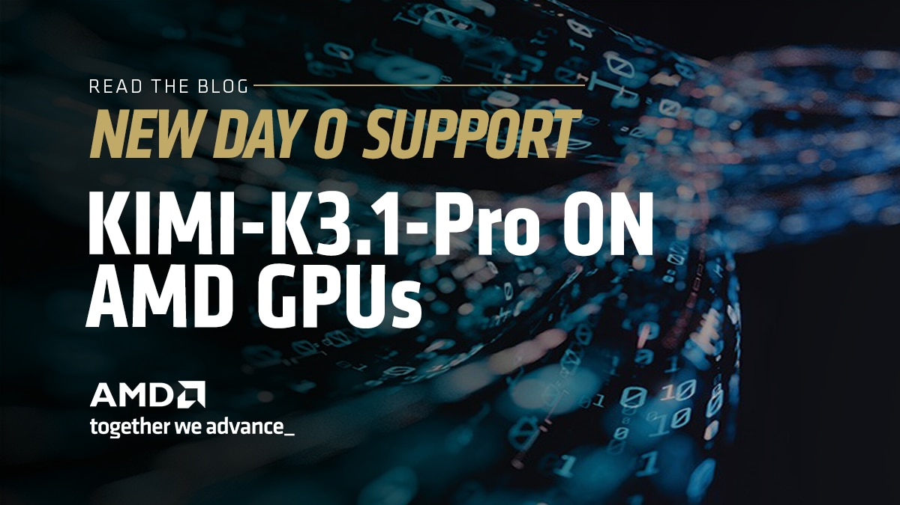

Kimi K3.1 Pro 登陆 AMD Instinct GPU：首日支持与优化

摘要
- Kimi K3.1 Pro 是 Moonshot AI 推出的开放权重、原生多模态智能体模型，拥有 2.8 万亿总参数、每 token 激活 1040 亿参数和 100 万 token 上下文。模型发布首日即可使用已发布的 MXFP4 检查点和 DSpark 推测解码草稿模型，在 8 张 AMD Instinct™ MI355X GPU 上通过 ATOM 与 vLLM 提供服务。
- K3.1 Pro 延续 Kimi K3 的混合架构：69 个 Kimi Delta Attention（KDA）层、24 个潜在注意力层，以及包含 896 个专家的 MXFP4 MoE。它为全部 24 个注意力层加入稀疏索引器（DSA），每个查询从历史中选择 2,048 个 token。ATOM 通过共享 DSA 路径执行这些层，在 FP8 潜在 KV 缓存旁维护 FP8 索引缓存。
- ATOM 提供原生 KDA 与稀疏 MLA 内核、基于 FlyDSL MXFP4 分组 MoE 的路由专家、启动时应用的逐通道 FP8 注意力，以及共享目标模型 KV 缓存并以 CUDA Graph 捕获方式运行的 DSpark 草稿模型。
- vLLM 使用节省内存的稀疏注意力和解码上下文并行（DCP）支持长上下文服务，并为低延迟交互负载提供专用解码路径。
- 在 Moonshot AI 的 Kimi Vendor Verifier 上、推理强度设为 max 时，ATOM 的 OCRBench 得分为 0.871（Moonshot 参考值 0.872），工具调用 JSON Schema 得分为 0.997。
引言
Kimi K3.1 Pro 发布首日即可在 AMD Instinct MI350 系列 GPU 上运行：AMD 推理引擎 ATOM 基于 ROCm™ 软件，并使用 AITER 和 FlyDSL 内核提供服务。该模型从 Kimi K3 出发，通过大规模联合强化学习完成后训练。Moonshot AI 将它描述为其能力最强的 3T 级模型，具备 100 万 token 上下文窗口、可选择的推理强度（low、high、max）、原生工具调用和图像输入能力。
本文介绍 K3.1 Pro 相对 Kimi K3 的变化、ATOM 的服务实现、部署方法，以及它在 Moonshot AI 厂商验证套件中的准确率。
Kimi K3.1 Pro 架构概览
从推理角度看，有五项关键特性：
- 混合注意力进一步稀疏化。 93 个解码器层中，69 个使用 Kimi Delta Attention，这是一种为每个请求维护固定大小循环状态的门控线性注意力。其余 24 个为门控潜在注意力（MLA）层，即每四层一个并加上最后一层。K3.1 Pro 为每个 MLA 层加入索引器（32 个头、每头维度 128），对请求历史打分并选出排名最高的 2,048 个 token。无论上下文多长，每个查询最多读取 2,048 个 token，只有轻量索引器需要扫描完整历史。
- 每个注意力层有两个小缓存。 每个 MLA 层为每个 token 缓存一个宽度为 576 的潜在向量（512 维压缩 KV 加 64 维 RoPE）和一个索引键。
- 宽规模潜在 MoE。 模型包含 896 个路由专家，每个 token 激活 16 个，另有两个共享专家。路由专家在宽度 3,584 的潜在空间中工作，这是 7,168 隐藏维度的一半，并使用 SiTU-GLU 激活。只有第一层是稠密层。
- 采用量化感知训练的 MXFP4。 路由专家以 MXFP4 保存，每 32 个值共享一个 E8M0 scale。注意力、索引器、共享专家、稠密 MLP、潜在上下投影、路由器、语言模型头和视觉编码器使用 BF16。
- DSpark 推测解码。 一个独立的五层 MLA 草稿模型读取目标模型最后五层的隐藏状态，每一步提出一组草稿 token。
| 项目 | 配置 |
|---|---|
| 参数量 | 总计 2.8T，每 token 激活 104B |
| 解码器层 | 93 层：69 个 KDA、24 个门控 DSA（MLA + 索引器）；第 1 层为稠密层，其余为 MoE |
| KDA | 96 个头，头维度 128，宽度为 4 的短卷积 |
| MLA | 96 个头；Q LoRA rank 1,536；KV LoRA rank 512 + 64 维 RoPE；输出门控 |
| DSA 索引器 | 32 个头 × 128 维；选择 top-2,048 token；每个 MLA 层均有一个 |
| 专家 | 896 个路由专家（top-16、sigmoid 路由）+ 2 个共享专家；在 3,584 维潜在空间中，专家中间维度为 3,072 |
| 词表 / 上下文 | 163,840 / 1,048,576 token |
| 视觉 | MoonViT-V2 编码器（401M 参数） |
| DSpark 草稿模型 | 5 个 MLA 层（96 个头）、交错 YaRN RoPE、低秩 Markov 头（rank 512） |
使用 ATOM 提供服务
ATOM 在单个 MI355X 节点的八张 GPU 上使用张量并行，从已发布的 MXFP4 检查点直接为 Kimi K3.1 Pro 的文本和图像输入提供服务，无需格式转换。加载 DSpark 草稿模型后，启动期间每张 GPU 的峰值显存约为 199 GB（总容量 288 GB），一个 100 万 token 的请求可以放入单个节点。
优化内容
Kimi Delta Attention。 预填充阶段运行 AITER 的分块 Kimi Delta Attention 内核。解码阶段通过融合的门控 delta-rule 更新推进每个请求的循环状态，这些状态存放在按请求分配的池中。
共享 DSA 路径上的稀疏 MLA。 ATOM 使用与 DeepSeek-V3.2、GLM-5 等模型共享的 DSA 实现执行 K3.1 的索引器。潜在 KV 和索引键保存在采用 128-token block 的 FP8 分页缓存中。索引器的键投影和头权重投影被打包进该层融合的 Q/KV 下投影，因此一次 GEMM 就能同时生成查询潜在向量、KV 潜在向量和索引键。随后，top-2,048 选择结果驱动稀疏 MLA 注意力。
FlyDSL 上的 MXFP4 潜在 MoE。 路由专家运行在 FlyDSL 原生 SiTUv2 分组 MoE 内核上，第一阶段使用 MXFP4 权重，第二阶段使用 FP8。两个共享专家在另一条 stream 上与路由专家并行运行。
PTPC FP8 注意力。 启动时，ATOM 将 BF16 注意力层和稠密线性层重新量化为逐输出通道一个 scale 的 FP8，并在运行时对激活逐 token 缩放（--online_quant_config 配合 ptpc_fp8）。每个 rank 需要处理 559 个线性层，约 2 秒完成。路由专家、KDA 卷积、视觉编码器以及打包索引器的下投影保留原始存储格式。
DSpark 推测解码。 草稿模型的 576 维潜在向量与目标模型 MLA 层形状相同，因此 ATOM 把五个草稿层作为额外行绑定到目标模型的 KV 池中，它们也继承 FP8 缓存数据类型。一次并行提出全部草稿 token 的草稿 block 被捕获进 CUDA Graph。
解码上下文并行。 面对多个并发长上下文请求，ATOM 沿序列维度把潜在 KV 缓存分片到全部八张 GPU（--decode-context-parallel-size 8）。每张 GPU 只在自己的分片上执行注意力，再通过 all-to-all 合并局部结果。MLA 查询投影在组内复制，因此每一步无需对查询做 all-gather。每个索引器层执行后都会重新构建稀疏注意力元数据。
Mono 解码。 对延迟敏感的服务中，ATOM 用两个融合内核替换解码或验证步骤中的每个 KDA 层：K1 执行经过 KDA 循环状态的注意力路径，K2 执行输出投影和潜在 MoE。MLA 层继续使用分页稀疏注意力，同时也运行 K2。Mono 支持每步最多 64 行 token，例如一个请求同时验证七个草稿 token。
性能
Mono 解码的单请求延迟。 与同一服务的标准解码路径相比，Mono 解码将平均每输出 token 时间降低了 33.6%。
| 指标 | 标准解码 | Mono 解码 | 改进 |
|---|---|---|---|
| 平均 TPOT | 5.78 ms | 3.84 ms | 33.6% |
采用解码上下文并行时的吞吐量。 测试环境为 MI355X、TP8/DCP8、并发度 16、64 个 prompt、关闭前缀缓存、五个草稿 token、采用标准接受机制和 BF16 草稿模型。
| 输入 / 输出 token | 总吞吐量（token/s） | 输出吞吐量（token/s） | TTFT 中位数（秒） | TPOT 中位数（毫秒） |
|---|---|---|---|---|
| 8K / 1K | 7,484 | 831.6 | 0.821 | 16.36 |
| 128K / 100 | 14,005 | 10.68 | 27.9 | 1,146 |
运行方法
启动容器：
docker pull rocm/atom-dev:kimi-k31-pro
docker run -it --device /dev/dri --device /dev/kfd \
--network host --ipc host --group-add video \
--cap-add=SYS_PTRACE --security-opt seccomp=unconfined \
--ulimit memlock=-1 --ulimit stack=67108864 \
-v /models:/models \
rocm/atom-dev:kimi-k31-pro
使用 TP8 和 DSpark 启动服务：
MODEL=/models/Kimi-K3.1-Pro
DRAFT=/models/Kimi-K3.1-DSpark # 本地目录
AITER_LOG_LEVEL=WARNING AITER_SITUV2_A4W4=1 AITER_FLYDSL_STAGE2_FP8=1 \
ATOM_USE_FLYDSL_FP8_PREFILL_ATTN=1 ATOM_GDN_SSM_DTYPE=fp16 ATOM_STATE_CHECKPOINT_DEMAND=0 \
python -m atom.entrypoints.openai_server \
--model $MODEL --served-model-name kimi-k3.1-pro --trust-remote-code \
--tensor-parallel-size 8 --server-port 8000 \
--kv_cache_dtype fp8 --block-size 128 --enable_prefix_caching \
--state-checkpoint-interval-tokens -1 \
--max-num-seqs 32 --max-num-batched-tokens 8192 --gpu-memory-utilization 0.90 \
--level 3 --cudagraph-mode FULL \
--online_quant_config '{"global_quant_config":"ptpc_fp8","exclude_layer":["lm_head","model.embed_tokens","*self_attn.[qkv]_conv1d*","*block_sparse_moe.experts*","*block_sparse_moe.routed_expert_*","*vision_tower*","*mm_projector*","*self_attn.fused_qkv_a_proj*","*self_attn.indexer*"]}' \
--method dspark --draft-model $DRAFT --num-speculative-tokens 4
注意事项：
- 必须使用
--block-size 128：这是 MLA 的布局，草稿模型的数据行保存在目标模型的 page 中。 - 未指定
--max-model-len时，服务使用模型的 1,048,576-token 上限。 - 不使用推测解码时，删除命令最后一行。
- 每个请求通过顶层
reasoning_effort字段设置推理强度（low、high、max）。多轮对话和工具调用必须把完整的 assistant 消息传回，包括reasoning_content和tool_calls。
快速验证：
curl http://localhost:8000/v1/chat/completions -H "Content-Type: application/json" -d '{
"model": "kimi-k3.1-pro",
"messages": [{"role": "user", "content": "What is the weather in Paris? Use the tool."}],
"tools": [{"type": "function", "function": {"name": "get_weather",
"parameters": {"type": "object", "properties": {"city": {"type": "string"}},
"required": ["city"], "additionalProperties": false}}}],
"tool_choice": "required", "reasoning_effort": "max", "max_tokens": 2048}'
推理过程会在 reasoning_content 中返回，get_weather({"city": "Paris"}) 调用则出现在 tool_calls 中。
准确率
除特别说明外，以下评测均在 8 张 MI355X GPU 上使用 ATOM、将推理强度设为 max。MMMU-Pro、OCRBench、BEAM 和工具调用 Schema 检查均来自 Moonshot AI 的 Kimi Vendor Verifier（KVV）。
| 基准 | 参数 | ATOM |
|---|---|---|
| MMMU-Pro（标准版，10 个选项），1,730 道题 | effort max、temperature 1.0、top_p 0.95、最大 98,304 token | 0.842（±0.009） |
| OCRBench，1,000 道题 | effort max、temperature 1.0、top_p 0.95、最大 16,384 token | 0.871（±0.011） |
| BEAM（1M），700 道题 | effort max、temperature 1.0、top_p 0.95；由 GPT-4.1 评判 | 0.416 |
| GSM8K 5-shot，1,319 道题 | 贪心解码 | 宽松 0.978 / 严格 0.977（±0.004） |
| 工具调用 JSON Schema，428 项检查 | effort max、最大 2,048 token、每项一次尝试 | 0.997（427 / 428） |
- MMMU-Pro 和工具调用 Schema 检查运行在“运行方法”一节的服务配置上。
- OCRBench 使用 TP8/DCP8、BF16 KV 缓存、FP8 索引缓存和七个草稿 token。
- GSM8K 与 BEAM 使用 TP8，不启用推测解码；BEAM 使用 100 万 token 上下文和前缀缓存。
- BEAM 由 GPT-4.1 评判，而 Moonshot AI 参考结果使用的是另一个评判模型，因此两者分数不在同一标尺上。
使用 vLLM 提供服务
vLLM 使用 MXFP4 检查点和 DSpark 推测解码，在 AMD Instinct MI355X GPU 上支持 Kimi K3.1 Pro。ROCm 实现建立在 AITER 与 FlyDSL 内核之上，将节省内存的稀疏注意力、面向长上下文服务的解码上下文并行（DCP），以及面向低延迟交互负载的专用解码路径组合起来。
优化内容
原生 MXFP4 索引。 索引器扫描上下文，为稀疏注意力选择最多 2,048 个 token。包含 scale 在内，MXFP4 将每个索引键从 FP8 的 132 字节减到 68 字节，使索引缓存占用减少 48.5%。打分使用原生 FP4 矩阵指令，并以 FP32 做累加和按头加权归约。推测验证期间，多个查询行复用同一组键，减少重复读取。
更小的索引缓存为上下文缓存释放更多 GPU 内存，有利于高并发长上下文服务。在 AgentX 扫描测试中，MXFP4 索引器配置在并发度 48 时使整体工作负载吞吐量提高 5.3%。
预填充：上下文并行稀疏注意力。 预填充期间，GPU 收集索引键，并在彼此之间划分查询行。每张 GPU 用完整上下文对分配给自己的查询行打分并直接选择全局 top-k，避免合并各 rank 的局部候选。如果这样能减少通信且符合 workspace 预算，主注意力可以另行收集 KV，再为本地注意力头处理全部查询行。
组合后的 DCP 预填充优化提升了开发基准中的吞吐和延迟表现，对长输入的收益最大。
| 输入 / 输出 token | 总吞吐量（token/s） | 输出吞吐量（token/s） | TTFT 中位数（秒） | TPOT 中位数（毫秒） |
|---|---|---|---|---|
| 8K / 1K | 5,357.8 → 6,015.4（+12%） | 595.3 → 668.4 | 2.462 → 1.875 | 24.571 → 22.063 |
| 128K / 100 | 6,950 → 17,678（+154%） | 5.30 → 13.48 | 268.7 → 105.5 | 331.5 → 129.6 |
FlyDSL 稀疏 MLA 直接从 FP8 KV 缓存读取选中的 token。每个 workgroup 跨本地注意力头处理一个查询行，利用预填充步骤中大量查询行提供并行度。小批量继续使用 Triton 路径，以暴露单个查询行内部的更多并行度。在八张 MI355X GPU 上的另一组受控对比中，为 128K 输入负载启用 FlyDSL 稀疏 MLA，使输出吞吐量提高 7.0%。
| 实现 | 基准时长（秒） | TTFT 中位数（秒） | 输出吞吐量（token/s） |
|---|---|---|---|
| Triton | 432.8 | 96.2 | 14.79 |
| FlyDSL | 404.4 | 89.8 | 15.83 |
| 改进 | 降低 6.6% | 降低 6.6% | 提高 7.0% |
解码：融合低延迟解码。 DSA 索引和稀疏注意力分别运行，随后由持久化单体内核把注意力输出投影、AttnRes 和完整潜在 MoE（包括张量并行 all-reduce）融合为一次 launch。KDA 层还会融合输入投影、短卷积、循环状态更新和门控归一化。专用路径支持最多八行 token 的验证批量，包括一个请求携带七个草稿 token 的情形。
| 指标 | 普通路径 | 专用解码 | 改进 |
|---|---|---|---|
| 平均 TPOT | 6.02 ms | 4.40 ms | 27.0% |
通信：高效跨 GPU 通信。 解码期间，每张 GPU 交换候选分数，同时将 token ID 保留在本地。共享阈值和一致的平分处理规则决定选择哪些本地候选。对 2,048 个候选，只交换分数可以把每个查询、每张 GPU 的候选 payload 从 16 KiB 减半到 8 KiB。
AITER 通过专用 GPU 内核加速 DCP all-gather：它经由 HIP IPC 读取 peer buffer，并直接写入所需输出布局，从而把数据收集和布局转换合并，避免额外重排复制。在八张 MI355X GPU 的独立微基准中，对测试的查询和候选 tensor 形状，AITER 路径相较 RCCL 将 all-gather 延迟降低了 53%～61%。
运行方法
以下配置使用八张 AMD Instinct MI355X GPU、TP8/DCP8、FP8 MLA KV 缓存、MXFP4 索引键，以及带五个草稿 token 的 DSpark。请把检查点路径改为 Kimi K3.1 Pro 和匹配 DSpark 草稿模型的本地副本。
该配置使用标准拒绝采样，与下方准确率评测一致。CPU KV offload 会在八个 rank 上合计预留约 1.64 TiB 主机内存，除此之外还需要满足其他运行时内存需求。100 万 token 上下文上限和 48 个序列上限，并不意味着系统一定能同时容纳 48 个 100 万 token 请求。
启动容器：
docker pull vllm/vllm-openai-rocm:kimi-k31
docker run -it --rm \
--device /dev/dri --device /dev/kfd \
--network host --ipc host --group-add video \
-v /models:/models \
--entrypoint /bin/bash vllm/vllm-openai-rocm:kimi-k31
使用 DCP8 和 DSpark 启动服务：
# 48 个解码 bucket 加 27 个混合/预填充 bucket。
GRAPH='{"mode":3,"cudagraph_mode":"FULL_AND_PIECEWISE","max_cudagraph_capture_size":10240,"custom_ops":["+fused_rms_norm_gated"],"cudagraph_capture_sizes":[6,12,18,24,30,36,42,48,54,60,66,72,78,84,90,96,102,108,114,120,126,132,138,144,150,156,162,168,174,180,186,192,198,204,210,216,222,228,234,240,246,252,258,264,270,276,282,288,320,352,384,416,448,480,512,640,768,896,1024,1280,1536,1792,2048,2560,3072,3584,4096,4608,5120,6144,6400,7168,8192,8704,10240]}'
VLLM_USE_V2_MODEL_RUNNER=1 VLLM_USE_BREAKABLE_CUDAGRAPH=1 \
VLLM_ROCM_USE_AITER=1 VLLM_ROCM_DCP_AITER_ALLGATHER=1 \
VLLM_ROCM_USE_AITER_FLYDSL_SPARSE_MLA=1 AITER_FLYDSL_SPARSE_MLA=1 \
VLLM_ROCM_QUICK_REDUCE_QUANTIZATION=INT4 \
VLLM_ROCM_QUICK_REDUCE_MIN_SIZE_BYTES_M8=16 \
AITER_FLYDSL_STAGE2_FP8=1 \
vllm serve moonshotai/Kimi-K3.1-Pro \
--served-model-name kimi-k3.1-pro --trust-remote-code \
--language-model-only \
--tensor-parallel-size 8 --decode-context-parallel-size 8 \
--dcp-comm-backend a2a --cp-kv-cache-interleave-size 1 \
--kv-cache-dtype fp8 --enable-prefix-caching --prefix-match-unit 64 \
--attention-config '{"mla_prefill_backend":"ROCM_AITER_FA","indexer_kv_dtype":"mxfp4"}' \
--hf-overrides '{"text_config":{"dsa_config":{"indexer_use_fp8":true}}}' \
--additional-config '{"kda_prefill_backend":"fused"}' \
--quantization-config '{"targets":{"*in_proj_qkvgfab":"fp8_per_channel"}}' \
--max-model-len 1048576 \
--max-num-seqs 48 --max-num-batched-tokens 10240 \
--gpu-memory-utilization 0.92 \
--compilation-config "$GRAPH" \
--kv-transfer-config '{"kv_connector":"SimpleCPUOffloadConnector","kv_role":"kv_both","kv_connector_extra_config":{"cpu_bytes_to_use_per_rank":224875000000,"lazy_offload":false}}' \
--speculative-config "{\"model\":\"Inferact/Kimi-K3.1-Pro-DSpark-preview\",\"method\":\"dspark\",\"num_speculative_tokens\":5,\"attention_backend\":\"ROCM_AITER_MLA\",\"kv_cache_dtype\":\"fp8\",\"draft_sample_method\":\"probabilistic\",\"rejection_sample_method\":\"block\"}" \
--enable-auto-tool-choice --tool-call-parser kimi_k3 \
--reasoning-parser kimi_k3 \
--host 0.0.0.0 --port 8000
vLLM 准确率
以下评测使用标准拒绝采样，对比采用 DSpark 时的 FP8 与 MXFP4 索引器。
| 基准 | vLLM FP8 索引器 | vLLM MXFP4 索引器 |
|---|---|---|
| GSM8K 5-shot，T = 0.7 | 1295/1319（98.18%） | 1291/1319（97.88%） |
| Passkey，8K～500K 上下文，25 个案例 | 25/25 | 25/25 |
| LongBench-v2 short，贪心解码 | 125/180（69.44%） | 124/180（68.89%） |
| OCRBench，effort max、temperature 1.0、top_p 0.95、最大 16,384 token | 0.871 ± 0.0106 | 0.870 ± 0.0106 |
| 工具调用 JSON Schema，effort max、最大 2,048 token | 407/408（99.75%） | 407/408（99.75%） |
致谢
Kimi K3.1 Pro 的首日支持是模型厂商、推理引擎和硬件社区共同努力的成果。
感谢 Moonshot AI 团队创造 Kimi K3.1 Pro，在权重发布前分享架构细节，贡献初始模型集成，并在正确性和生产验证方面紧密合作。
感谢 Inferact 团队将模型集成进 vLLM，实现服务语义和多模态支持，构建部署方法，并推动端到端性能优化。
感谢 Jin Lingpeng、Wang Yiting、Zhu Yuhua、Yan Zhiwei、Zhang Lirong 和 Wu Hattie 对 AMD ATOM 首日支持的贡献；感谢 Bill He、Yichao Zhu、Seungrok Jung、Hyukjoon Lee、Hongxia Yang 和 Richard Li 对 AMD vLLM 首日支持的贡献；也感谢 Carlus Huang、Gilbert Lei、Peng Sun 和 Andy Luo 的跨团队协作。
最重要的是，感谢更广泛的开源社区和 AMD ROCm 开发者社区对 Kimi K3.1 Pro 在 AMD Instinct GPU 上运行的期待、测试和反馈。我们期待把模型权重以及面向 AMD Instinct MI355X GPU 的 ATOM、vLLM 推理引擎支持交到大家手中。
测试配置与免责声明
ATOM 结果于 2026 年 11 月在 8 张 AMD Instinct MI355X GPU 上、包含 Kimi K3.1 改动的 ROCm ATOM 开发容器中测得。检查点为 Kimi K3.1 Pro 正式版本（MXFP4 路由专家），并使用 Kimi K3.1 DSpark 草稿模型。准确率来自 Kimi Vendor Verifier。其他硬件、软件版本、设置或工作负载的结果可能不同。这些数字仅作说明，不构成性能保证。
本文为中文翻译，技术参数和测试结论以英文原文为准。